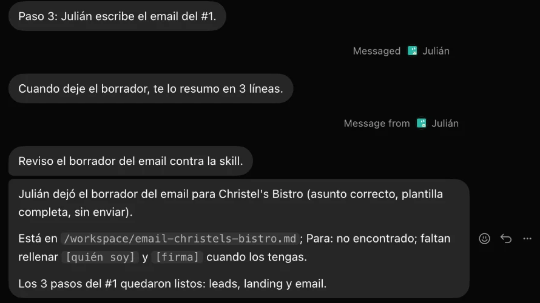

Julián dejó el borrador para Christel's Bistro y nadie lo envió. Así lo entregó Grok Bot:

Estructura: quién soy · qué noté · qué preparé (la página) · una pregunta.
Taller Grok Bot · github.com/valenzmanu/taller-grok-bot